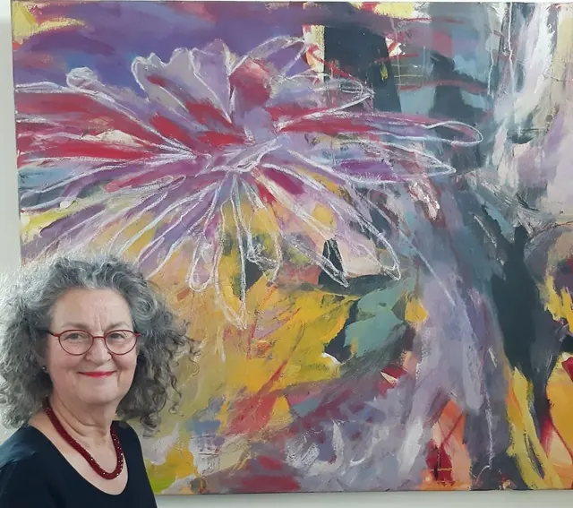

Nieuws ·
Expositie Lucia van Amsterdam in Marikenhuis

Van 13 februari tot eind mei exposeert Lucia van Amsterdam haar werk in het Marikenhuis in Nijmegen. Lucia (1956) is geboren in Duitsland en woont ruim 39 jaar in Nederland. Zij schildert abstract en kleurrijk op doek van groot formaat. Met haar schilderijen rangschikt zij zich onder de abstract expressionisten.
‘Zeven jaar geleden werd ik geraakt door kanker. Na een intensieve periode ben ik genezen verklaard. Als je hoort dat je kanker hebt, raken je emoties in een rollercoaster. Ik was eraan gewend om als een workaholic bezig te zijn en mij, naast lesgeven, helemaal uit te leven in het schilderen. Na mijn ziekteperiode merkte ik dat het scheppend bezig zijn nog veel meer betekenis kreeg. Ik besefte hoe langer hoe meer dat de kleuren van mijn schilderijen mij hielpen om overeind te blijven, mij hoop en kracht gaven. Kunst helpt mij nog beter in mogelijkheden te denken. Het voed mij net als het zonlicht. Mijn behoefte om het schilderen weer op te pakken groeit, waar het naartoe gaat is nog open.
Optimistisch denk ik graag in mogelijkheden en wil iedereen van mijn kleurrijke werken laten genieten. Zoals Albert Einstein zei: ‘Logica brengt je van A naar B, maar verbeelding brengt je overal.’ Kenmerkend voor mijn werk is het ongeremde gebruik van licht en kleur. Mijn inspiratie vind ik in de natuur. Leven, bloei, licht, verrassing en schoonheid. Vanuit een positieve levensinstelling hebben sprankelende kleuren en verwijzingen naar beweging en vrijheid voorkeur in mijn schilderijen. Ik werk heel lichamelijk en geef daarbij alles wat in mij zit. Kleur is hierbij zo onmisbaar dat woorden overbodig zijn. Mijn schilderijen zijn vaak explosief en transparant, opgebouwd uit felle en zachte kleuren, veel licht en krachtige penseelstreken. Voor mij is het belangrijk dat mijn werk in harmonie is en alle elementen samen een geheel vormen. Uiteindelijk is ook de natuur altijd in balans en dit evenwicht tussen licht en zwaar, tussen ingetogen en explosief, wil ik ook op mijn doek terugvinden. De ‘colorfields’ in mijn werk ontstaan door het weghalen, toevoegen, weglaten en/of juist benadrukken, het overschilderen en corrigeren.
Door het Marikenhuis heb ik nog een andere fijne kunstvorm ontdekt, namelijk het Zingen voor je Leven koor. Waar ik inmiddels alweer vier jaar zeer enthousiast lid van ben.’
Je bent van harte welkom in het Marikenhuis, Centrum voor leven met en na kanker,
Slotemaker de Bruïneweg 163, Nijmegen.
De expositie is te bezichtigen tijdens de open inloop van ma t/m do van 13.00 – 16.00 uur
Kijk voor al onze activiteiten op www.marikenhuis.nl.